ActD Créer une note
UMLActivity
Untitled
::
Note
::
ActD Créer une note
Description
none
Diagrams

ActD Créer une note
Groups
Utilisateur
SI
BDD
Edges
(InitialNode1→Afficher le formulaire de note)
(Afficher le formulaire de note→Remplir le formulaire de note)
(Remplir le formulaire de note→Vérifier les informations)
(Vérifier les informations→DecisionNode1)
(DecisionNode1→Afficher un message d'erreur)
(Enregistrer la note→Afficher un message d'accomplissement)
(Afficher un message d'accomplissement→Allez sur l édition de la note)
(Allez sur l édition de la note→ActivityFinalNode1)
(DecisionNode1→Enregistrer la note)
Properties
Name
Value
name
ActD Créer une note
stereotype
null
visibility
public
isReentrant
true
isReadOnly
false
isSingleExecution
false
Owned Elements
ActD Créer une note